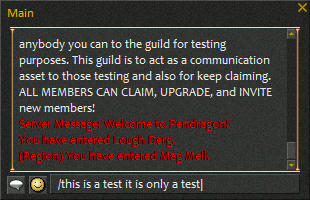

This option allows you to enable the close button in the top right corner of the Chat windows.

NOTE: Any closed/hidden chat windows will reappear whenever you relog or rezone. I have yet to figure out if it is possible to completly disable the new style of chat window as before so it does not appear across a rezone. Each variation I have tried so far causes the game client to crash.